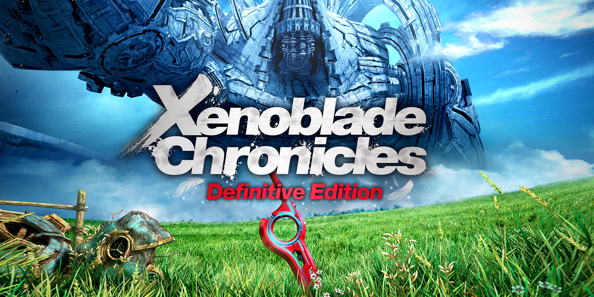
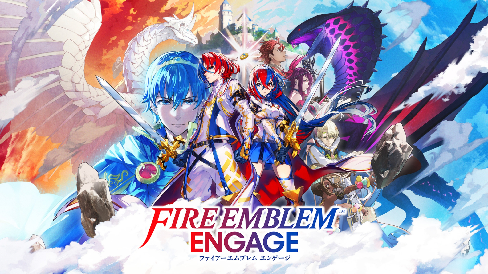

¡Bienvenidos!
Esta página está dedicada a repasar la historia y los elementos más importantes de las franquicias más icónicas de Nintendo. ¡Elige tu aventura en el menú de navegación!
Formularios
Formulario de jugadorThe Legend of Zelda

The Legend of Zelda es una épica serie de acción y aventura que sigue a Link en su misión por rescatar a la Princesa Zelda y detener al malvado Ganon, salvando el reino de Hyrule. Se caracteriza por sus complejos rompecabezas, exploración profunda y narrativa inmersiva. Títulos como Ocarina of Time y Breath of the Wild son considerados hitos en la historia de los videojuegos.
Metroid

Metroid se distingue por su atmósfera de ciencia ficción, exploración solitaria y un énfasis en la adquisición de mejoras para acceder a nuevas áreas. La protagonista, Samus Aran, es una cazarrecompensas que lucha contra los Piratas Espaciales y las criaturas Metroid. Es fundamental en la creación del subgénero conocido como "Metroidvania".
Donkey Kong Country

La franquicia Donkey Kong, si bien comenzó como un juego de arcade, se reinventó con la serie Country, famosa por sus desafiantes niveles de plataformas y gráficos pre-renderizados. Sigue las aventuras de Donkey Kong y su compañero Diddy Kong mientras recuperan su reserva de plátanos robada por el Rey K. Rool. Es conocida por su banda sonora memorable.
Pokémon

Pokémon es un fenómeno global que gira en torno a la captura, entrenamiento y batalla de criaturas fantásticas. Sigue el viaje de jóvenes entrenadores que aspiran a convertirse en Maestros Pokémon. La frase "¡Hazte con todos!" resume la esencia de la saga, que ha vendido millones de copias y ha generado series de televisión, películas y juegos de cartas.
Super Mario Bros

Super Mario Bros. es la saga estrella de Nintendo. Desde su debut en 1985, ha definido el género de plataformas con su jugabilidad innovadora, mundos coloridos y el eterno conflicto entre Mario y Bowser por el Reino Champiñón. La serie destaca por su constante evolución, introduciendo nuevas mecánicas y personajes en cada entrega.
Xenoblade Chronicles
Xenoblade Chronicles es una saga de JRPG de ciencia ficción y fantasía desarrollada por Monolith Soft. Se caracteriza por sus inmensos mundos abiertos construidos sobre titanes gigantes, un complejo sistema de combate de acción en tiempo real y narrativas filosóficas centradas en la relación entre los humanos, las máquinas y el concepto de la existencia.
Fire Emblem
Fire Emblem es la influyente saga de RPG Táctico desarrollada por Intelligent Systems. La franquicia es conocida por su jugabilidad basada en movimientos por cuadrícula, la mecánica de muerte permanente de unidades ('permadeath'), y narrativas dramáticas centradas en la realeza, la guerra, la magia y los lazos entre personajes.